铁柱AGI · 7/60
英文长文精选（下）
搞 7×24 小时后台自动化和多 Agent (an AI that takes steps on its own to finish a task) 协同，最怕角色边界模糊。把所有杂活和权限塞给单个 Bot，上下文很快胀破，容易在网页上误操作，一天就能耗光一周额度 (quota (how much use your plan allows))。
另一个坑是盲目新建 Bot。缺乏任务看板与交付状态机，最后只能整天在聊天框里手动捞信息。
这里精选了 2026 年 8 月到 10 月期间海外沉淀的 12 篇实战长文，核心机制都在下表里。
| 主题分类 | 来源与篇目 | 核心业务场景 | 关键机制与工具 |
|---|---|---|---|
| 自动化运维 | Gipp：24/7 Repo Ops | 仓库巡检与 CI 报错自动修复 | 6 具名 Bot 与 Kimi K3，设 Draft PR 防线 |
| 自动化运维 | Morlex：Opus 5.5 | 强推理模型接入与复杂任务分解 | Chief 调度中枢、Cursor Agent 与数据红线 |
| 自动化运维 | 社区：Issue 修复流水线 | 全天候 GitHub (a site for storing and sharing code) Issue 自动化修复 | /workspace/devdesk 状态机、独立 Review 与熔断上报 |
| 团队架构 | Movez：9 席位团队 | 官方 9 席位多 Agent 配置 | 5 信号切分、Attention List，缺数直接报错 |
| 团队架构 | distort：数字员工 | 首个数字员工配置与晋升规范 | 五大岗位字段、纯文字推演与可逆性权限 |
| 团队架构 | 社区：6 Bot 编队 | 6 Bot 极简研运编队搭建 | 独立记忆 (memory (facts the bot keeps between chats))切分、5 态看板与清晨 5 点站会 |
| 团队架构 | 社区：29 个 Agent | 跨领域多 Agent 协同飞轮 | 调度入口 Emma、Cursor Agent 配合跨角色接力 |
| 一人公司 | maestro：Top 10 | 覆盖销售、招聘与法务提示词 (prompt (the instruction you give the AI)) | 差异表与草稿交付、通用五行防线及专属凭证 |
| 一人公司 | beamnxw：一人公司 | 一人数字企业业务运转支架 | 公司简报单源、六字段看板与 Auto Review |
| 记忆控费 | n2parko：Team Bots | 组织级知识资产化与共享同事 | Databot、10x Engineer 与隔离双层记忆 |
| 记忆控费 | Radar：控费组合拳 | 额度快速耗尽归因与控费 | 唤醒频率控制、Duplicate 斩断上下文与脚本批处理 |
| 记忆控费 | rari：记忆工程规范 | 共享 Team Bot 记忆工程规范 | 五类上下文容器、快慢时钟与外部审查卡片 |
准备搭建多 Bot 协同流程时，把提示词直接发给主 Bot，梳理岗位边界与执行目录。
我打算参考英文社区的工程与自动化实践，在 Grok Bot 中搭建一套多 Agent 工作流：【填入具体业务场景，例如夜间代码缺陷巡检 / 一人公司日常运营】。
请帮我完成以下设计：
1. 明确角色编制：列出所需 Bot 清单（包括唯一的调度入口 Chief 与各专职角色），按「记忆边界」与「审批范围」划清每个角色的职责。
2. 规划工作目录：在云电脑 /workspace 下设计标准文件夹层次，定义状态转移文件（如 status.json、task.md），规范上下游交付物的流转格式。
3. 设立权限人闸：区分完全可逆的自动执行动作与不可逆的报批动作，明确外部发信、代码合并、资金支付与修改生产配置的拦截规则。
4. 优化额度消耗：为定时例程规划低频运行策略与「无新内容保持静默」机制，标出哪些批量规则计算应交由终端 Python 脚本处理。自动化研发与工程运维
代码仓库的日常维护充满偶发测试报错、依赖补丁和规范检查。把机械性工作交给后台 Agent 处理能省下大量时间，核心在于严格限制改动范围与合并权限。
How to Build a 24/7 Repo Ops Desk on Grok Bot (xAI's AI assistant that comes with its own computer) + Kimi K3 (Complete Guide)｜Gipp 🦅
来源：How to Build a 24/7 Repo Ops Desk on Grok Bot + Kimi K3 (Complete Guide)
作者：Gipp 🦅 @gippp69

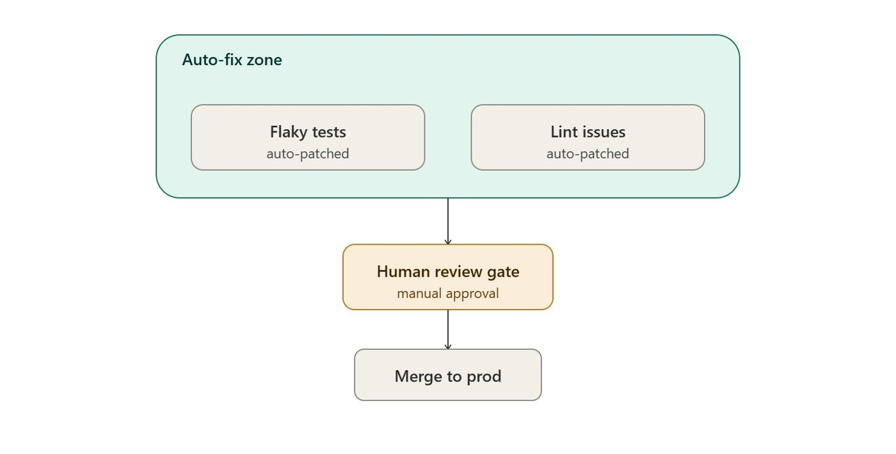
架构用 Grok Bot 当交互总控台，底层靠 Kimi K3 扛并发监控异常，单机号称能跑 300 个子 Agent，一共部署 6 个具名 Bot。
- Fix Bot 读取待修清单，专修 flaky test 和格式规范，自动提 Draft PR。
- 脚本绝不碰业务逻辑，而且只提待审草稿，绝不自动合入主分支。
- 先在边缘低风险仓库跑一周，看补丁采纳率再决定要不要扩充。
Grok Bot + Opus 5.5: The Ultimate Agent Harness in 10 Steps｜Morlex
来源：Grok Bot + Opus 5.5: The Ultimate Agent Harness in 10 Steps
作者：Morlex @0xMorlex
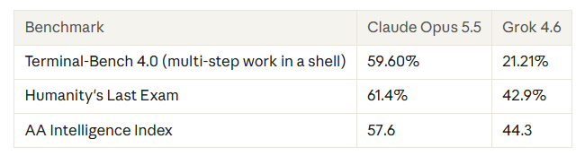
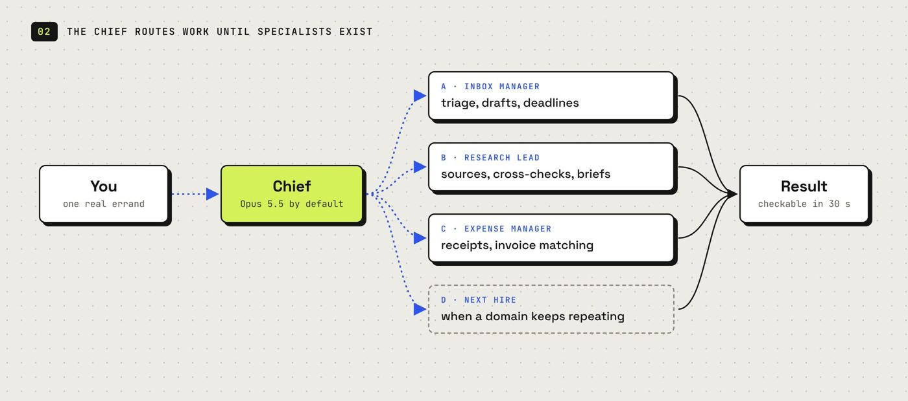
Grok Bot 引入 Claude Opus 5.5 后，Morlex 梳理了十步配置法，重点是以操作可逆性划分人闸。
- 架构上由通用 Bot Chief 统筹，按业务派生专能 Bot，并调动 Cursor 云端 Agent 协同编码。
- 检索、排版与草稿由 Bot 自主执行；涉及外部发信与资金变动，一律停下报批。
- 设立明确红线，禁止 Bot 检索财务目录、法律文件与敏感密钥。
Grok Bot + Opus 5.5: Build a 24/7 AI Engineering Team in 12 Steps
来源：Grok Bot + Opus 5.5: Build a 24/7 AI Engineering Team in 12 Steps
作者：Mori @0xjmori

 Mori 在云电脑
Mori 在云电脑 /workspace/devdesk 跑状态机修 GitHub 缺陷，由 Chief 调度四个专职角色推进。
- Triage 复现故障并提供失败用例。
- Builder 调 Cursor 云端 Agent 独立分支写补丁。
- Reviewer 独立复核，交由 Release 发布。
- 验收：补丁交付必须包含复现用例的前后对比执行日志。
- 熔断：同一测试报错两次立即停机呼叫人工，防止死循环空耗额度。
团队架构与岗位拆解
多 Bot 协同的核心在于理清组织架构。很多团队建立多个 Bot 后效率反而下降，根源在于岗位边界重叠、缺乏统一调度入口以及把单次对话经验错当成长期制度。
GrokBot Agents: build a team that works for you 24/7 in 10 steps (Full-Course)｜Movez
来源：GrokBot Agents: build a team that works for you 24/7 in 10 steps (Full-Course)
作者：Movez @0xMovez
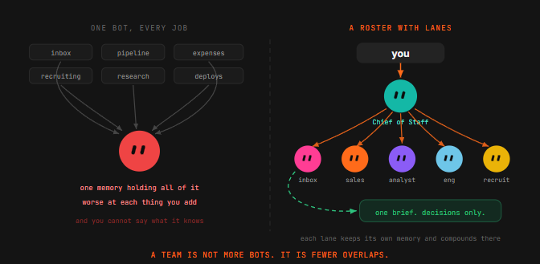
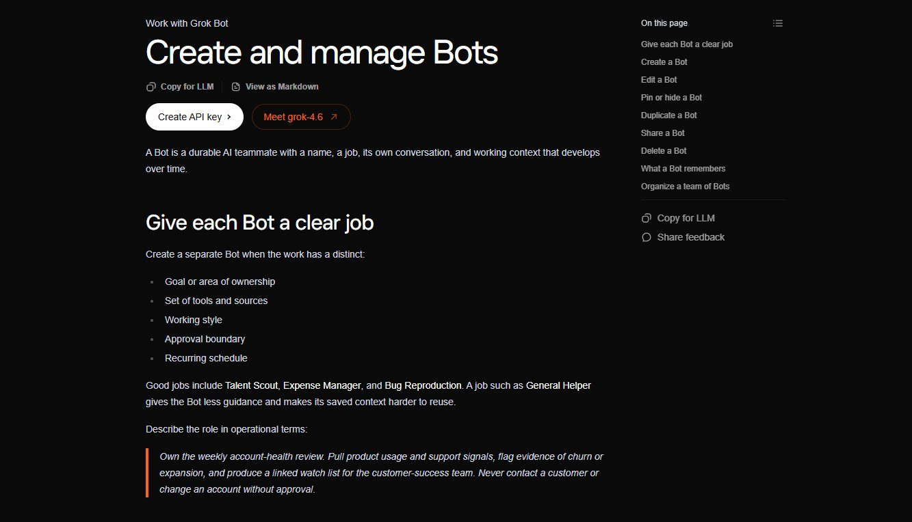
任务全堆给单 Bot 容易越做越乱。Movez 拆解了 SpaceXAI 的 9 席位 Agent 架构，给出从单次试验到常驻例程的七步路径。
- 5 个拆分信号：目标与工具分化，或风格、日程与审批边界不同时，拆建新 Bot。
- 配专属幕僚长：只管日历与收件箱，按真实交互维护动态清单，平时保持静默。
- 守好两条红线：数据缺失或过期直接报错，严禁自行编造；定好重试逻辑与失败边界前，坚决不开定时例程。
Grok Bot: How to Hire Your First AI Employee (Full Guide)｜distort
来源：Grok Bot: How to Hire Your First AI Employee (Full Guide)
作者：distort @distortgeekin
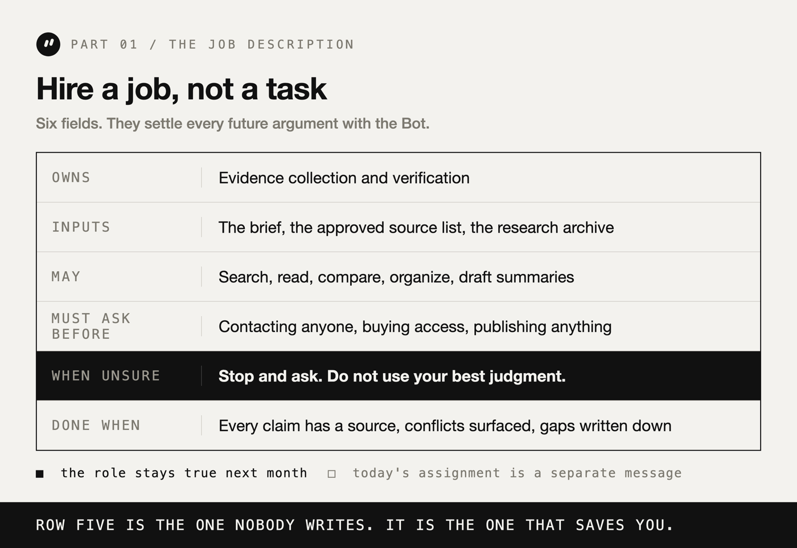
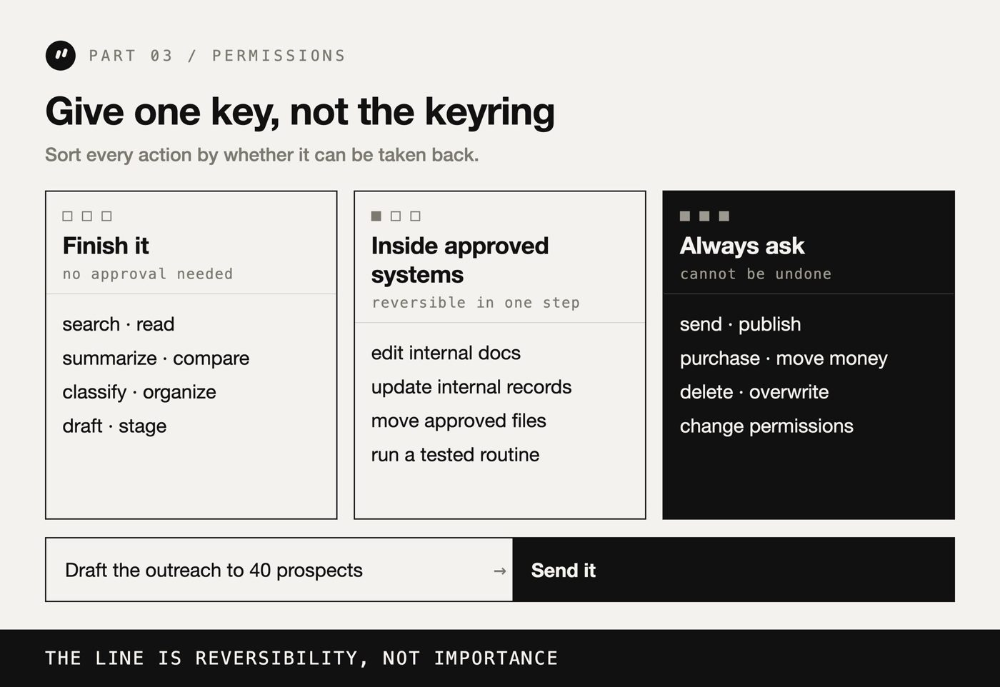
Profile 要包含 Owns、Inputs、May、Must ask before 和 Done when 五个字段。
带它上手分四步走。
- 一句话定职责，先挑高频易撤销的杂事。
- 执行前先用纯文字推演步骤与疑虑。
- 走完旁观、改规则、放手三轮测试。
- 按动作可逆性分权，调研草稿自主做，不可逆操作卡死人工审批。
交付验收必须卡死底线，遇到不确定停下询问，绝不能暗中猜测。
Grok Bot: How to Build Your First AI Team (Full Guide)
来源：Grok Bot: How to Build Your First AI Team (Full Guide)
作者：distort @distortgeekin
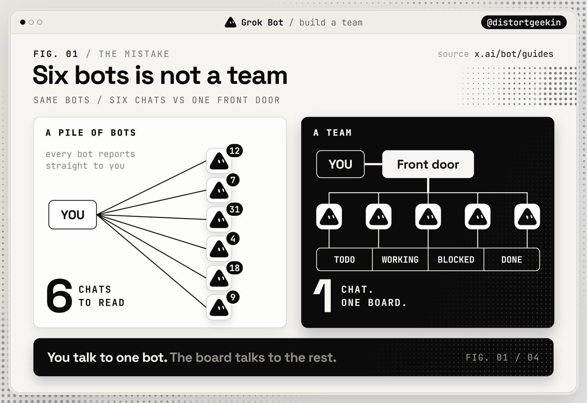
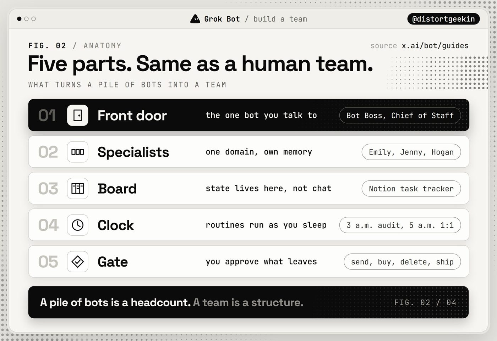
distort 分享了用 6 个 Bot 驱动高并发业务的架构（自述单月合并超 2000 个 PR），适合搭建 3 到 6 人 Bot 体系参考：- Chief of Staff 负责统筹：作为唯一中枢对接口，严禁亲自写代码或做具体任务。
- 专职 Bot 切分业务：各自保留独立记忆，任务全沉淀在线上看板推进。
- 清晨 5 点自动站会：运营 Bot 遍历各角色同步规范，靠定期校准解决上下文漂移。
How I use Grok Bot: My team of 29 AI agents
来源：How I use Grok Bot: My team of 29 AI agents
作者：Melvin Vivas @melvindvivas Melvin Vivas（@melvindvivas）用总管 Emma 串联 29 个 Agent（自述未核），分调研、研发、内容与商务 4 组协作。
- 调研 Bot 发现新模型，Emma 派代码 Bot 调 Cursor 云端 Agent 写范例并提 GitHub PR。
- 内容团队接力出教程草稿，各 Bot 用共享云电脑文件系统互传物料。
- 定期审计并下线无用任务，避免多 Bot 带来无效背景消耗。
一人公司与实战指令
10 套岗位提示词｜maestro
来源：Top 10 Grok Bot Prompts That Replace an Entire Team
作者：maestro @maestrooth
这套现成指令覆盖销售拓展、简历初筛与合同审查等 10 个场景。Bot 只产出草稿、差异比对或整理清单，绝不跨过外部执行红线。
- 风险隔离：多 Bot 共享同一云电脑环境，必须用专用邮箱与独立卡号。
- 验收标准：事实陈述必须附带原始网页链接，无证据直接丢弃。
- 防线机制：全局规则写入五行防线，每次执行完毕必须汇报处理条数、跳过项和具体报错。
单人公司业务支架｜beamnxw ./
来源：Grok Bot Engineering: Set Up a Harness for Your One-Person Company
作者：beamnxw ./ @beamnxw
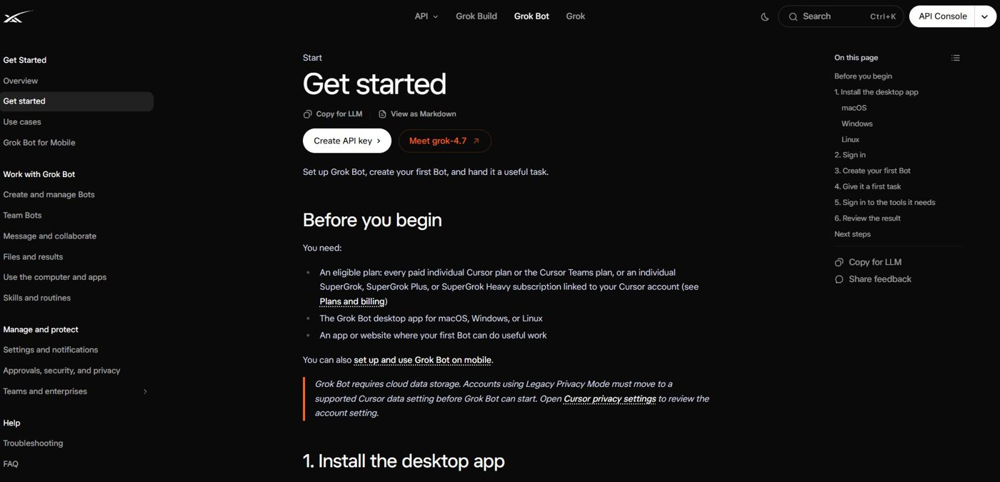
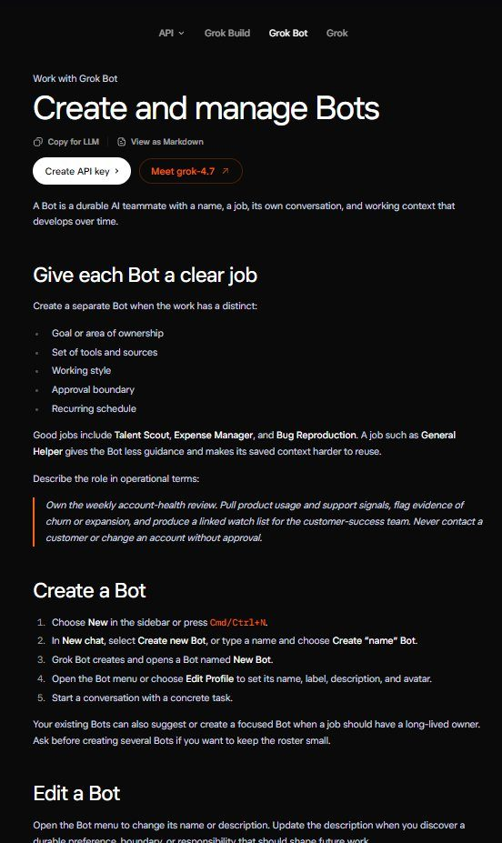
这套支架以 Operator 为核心，用单源简报锁死报价、客群与审批底线，搭配六字段看板跟踪流转。
- 减少重复：单源业务简报作为行为基准，避免每次派活重复交代背景。
- 人工把关：执行不可逆操作前主动挂起，关键决策留在人手里。
- 日常巡检：跑通的流程沉淀为标准 Skill (a saved how-to the bot can reuse)，工作日早晨 9 点通过 Routine (a task the bot runs on a schedule or a trigger) 自动巡检看板。
记忆工程与成本控制
Bot 接入团队协作和定时调度后，最容易踩的坑就是记忆被带偏和额度跑飞。建立分层记忆并配合克制调度，系统才能长期跑下去。
Meet your Team Bots｜n2parko
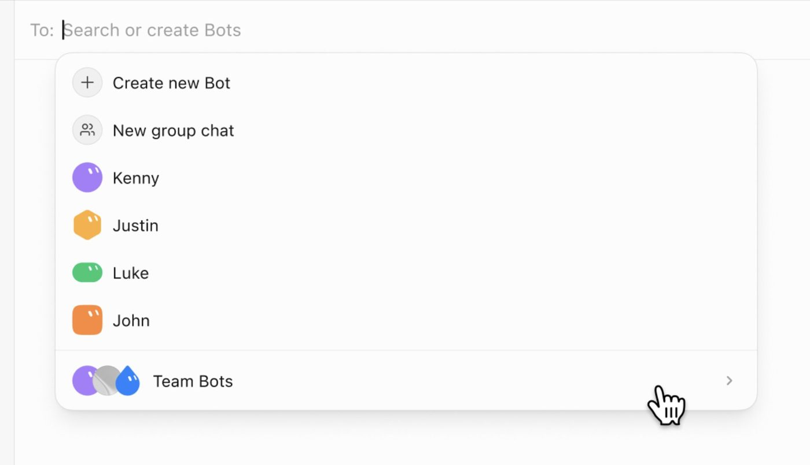
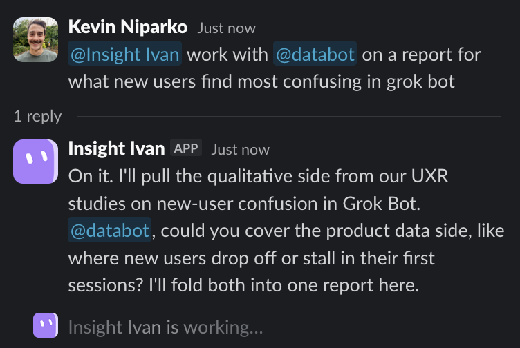
n2parko（@n2parko）介绍了官方 Team Bots 机制，适合想沉淀专有知识、减少高频咨询的主管。这套功能在 Web 与 Slack (a work chat app) 运行，主打全局团队记忆加个人独立笔记的双层机制。- 专家建专属 Bot：SpaceXAI 数据团队打造的 Databot 熟悉数据湖与可视化（自述覆盖超 4.5 万张数据表，未核），替专家挡掉大量琐碎咨询；工程与市场也各设专属 Bot 统一步调。
- 沉淀经验：把业务专家的隐性经验固化为共享工具，同时保护个人交互私密性。
How to Stop Your Grok Bot From Eating a Week of Usage in a Day｜Fan Grok Bot Radar
来源：How to Stop Your Grok Bot From Eating a Week of Usage in a Day
作者：Fan Grok Bot Radar @GrokBotRadar
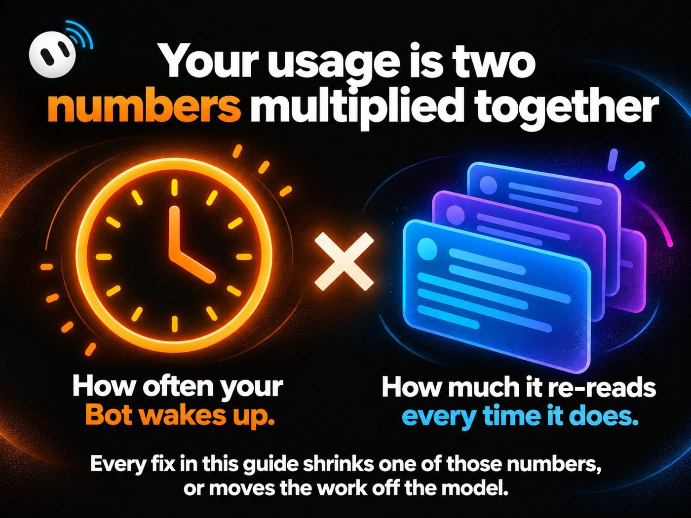
Fan Grok Bot Radar（@GrokBotRadar）拆解发现，用量本质是唤醒频次乘以单次重读完整历史上下文，每次触发都会连带重读完整对话记录。作者给出了五条降耗实操：
- 压缩频次：全天 15 分钟轮询缩减为工作时段定时检查。
- 切断历史：定期用 Duplicate 复制 Bot 重置历史（自述单次 Token (a small chunk of text; AI usage is counted in tokens) 降低约 75%，未核）。
- 物理拆分：高频聊天的 Bot 和跑例程的 Bot 分开部署。
- 脚本兜底：邮件筛选等确定性杂务交给云电脑终端跑 Python 脚本。
- 验收标准：给监控例程加上静默规则，无异常绝不产生无用消息。
Grok Bot Memory (facts the bot keeps between chats) Engineering: How One Agent Learns With a Team｜rari
来源：Grok Bot Memory Engineering: How One Agent Learns With a Team
作者：rari @0xwhrrari
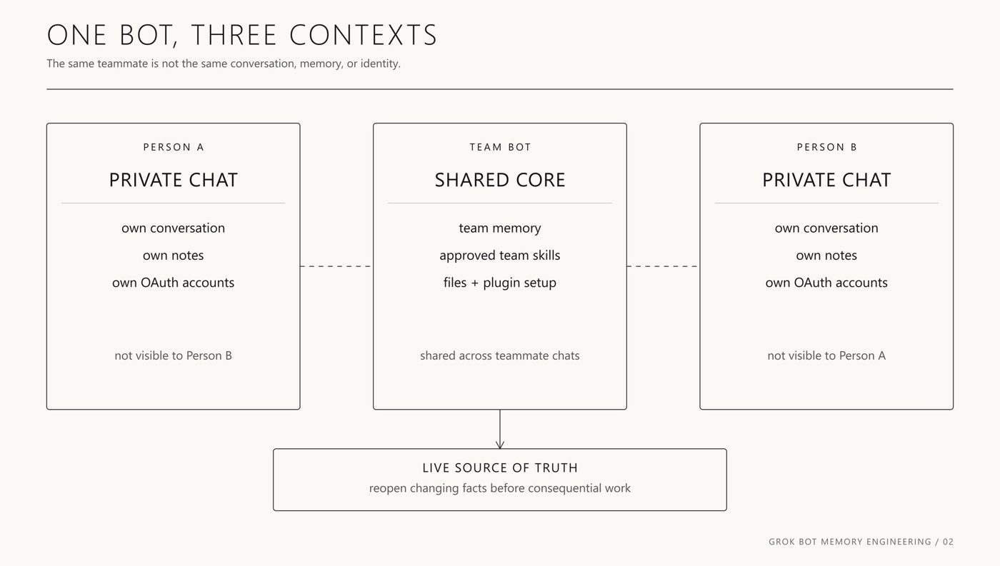
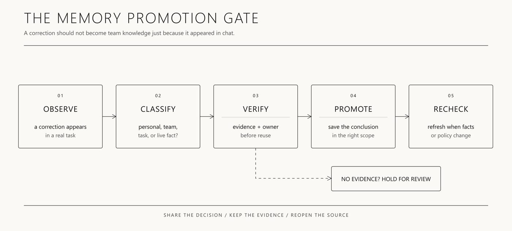
rari（@0xwhrrari）这套架构专门解决多人共享 Bot 时的记忆污染问题，适合工程架构师。他把上下文拆成五类容器，分别存放实时源、技能 (skill (a saved how-to the bot can reuse))和团队记忆，以及个人笔记与任务状态。- 快慢时钟分流：语气等慢时钟信息存入团队记忆；价格与库存等快时钟数据必须每次实时查询源系统。
- 审查卡片：标清责任人、出处与失效日期，经核准后才允许写入共享池。
- 验收防线：正式上线前测试跨用户隐私泄露与频道权限边界，把错误记忆当成数据事故严肃排查和回滚。
Source: https://bot.fmcat.top/cases/en2